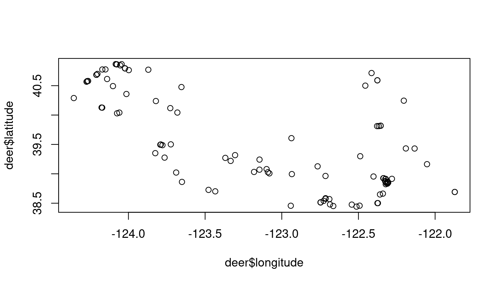
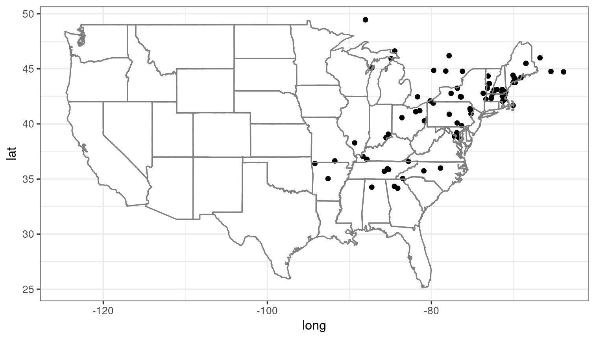
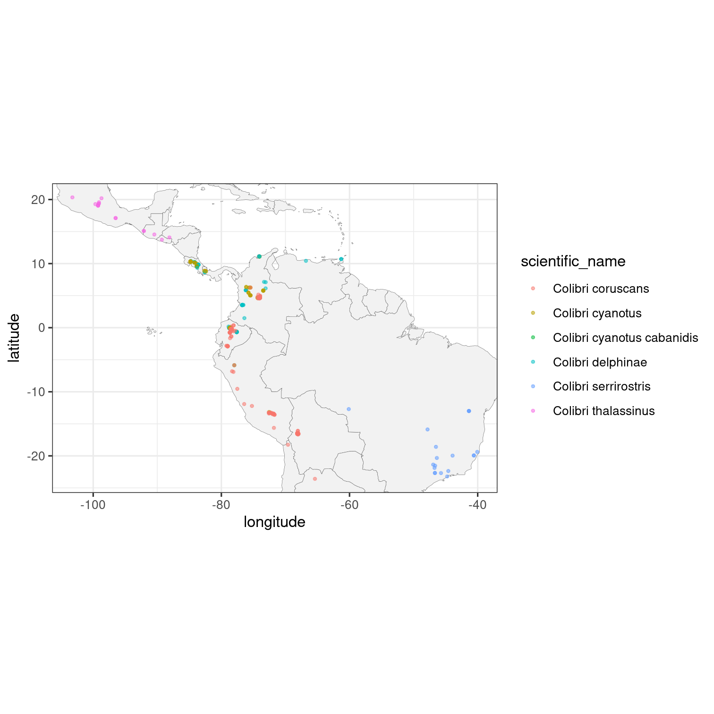

Access iNaturalist data through APIs
Edmund Hart, Stéphane Guillou
2022-06-14
Source:vignettes/rinat-intro.Rmd
rinat-intro.RmdAbout
rinat is a wrapper for iNaturalist APIs for accessing the observations. The detailed documentation of the API is available on the iNaturalist website and is part of our larger species occurrence searching packages SPOCC.
Quickstart guide
Get observations
get_inat_obs() is the primary function that retrieves observations from iNaturalist. The text or taxon search can be refined by observation date, record quality and location.
It is recommended to set the
qualityargument to"research"in order to get more reliable data that has been validated by several contributors.
Fuzzy search
You can search for observations by either common or scientific name. It will search the entire iNaturalist database, so the search below will return entries that mention Monarch butterflies, not just Monarch observations.
library(rinat)
monarchs <- get_inat_obs(query = "Monarch Butterfly", year = 2021)
unique(monarchs$scientific_name)
#> [1] "Danaus plexippus" "Danaina"Note that
get_inat_obs()will return 100 observations by default. This can be controlled with themaxresultsargument.
Another use for a fuzzy search is searching for a habitat, e.g. searching for all observations that might happen in a vernal pool. We can then explore the taxon names found.
vp_obs <- get_inat_obs(query = "vernal pool")
# see the first few taxa
head(unique(vp_obs$scientific_name))
#> [1] "Lithobates sylvaticus" "Euphorbia hooveri" "Pseudognaphalium californicum"
#> [4] "Calanoida" "Scapholeberis" "Naididae"Taxon search
To return only records of a specific species or taxonomic group, use the taxon_name argument. For example, to return observations of anything from the Nymphalidae family, and restricting the search to the year 2015:
nymphalidae <- get_inat_obs(taxon_name = "Nymphalidae", year = 2015)
# how many unique taxa?
length(unique(nymphalidae$scientific_name))
#> [1] 81And to return only the Monarch butterfly observations that also mention the term “chrysalis”:
monarch_chrysalis <- get_inat_obs(taxon_name = "Danaus plexippus", query = "chrysalis")Bounding box search
You can also search within a bounding box by giving a simple set of coordinates.
## Search by area
bounds <- c(38.44047, -125, 40.86652, -121.837)
deer <- get_inat_obs(query = "Mule Deer", bounds = bounds)
plot(deer$longitude, deer$latitude)
Other functions
Get information and observations by project
You can get all the observations for a project if you know its ID or name as an iNaturalist slug.
## Just get info about a project
vt_crows <- get_inat_obs_project("crows-in-vermont", type = "info", raw = FALSE)
#> 206 records
## Now get all the observations for that project
vt_crows_obs <- get_inat_obs_project(vt_crows$id, type = "observations")
#> 206 records
#> Getting records 0-200
#> Getting records up to 400
#> Done.
#> Note: mismatch between number of observations reported and returned by the API.Get observation details
Detailed information about a specific observation can be retrieved by observation ID. The easiest way to get the ID is from a previous search for that taxon.
head(get_inat_obs_id(monarch_chrysalis$id[1]))
#> $id
#> [1] 121193310
#>
#> $observed_on
#> [1] "2022-06-09"
#>
#> $description
#> [1] "Hatched on 5/21, formed J and chrysalis both on 6/9 within about 12 hours, host was Asclepias syriaca"
#>
#> $latitude
#> [1] "38.6252520294"
#>
#> $longitude
#> [1] "-90.3803088003"
#>
#> $map_scale
#> NULLGet all observations by user
If you just want all the observations by a user you can download all their observations by user ID. A word of warning though, this can be quite large (easily into the 1000’s).
user_obs <- get_inat_obs_user(monarch_chrysalis$user_login[1], maxresults = 20)
head(user_obs)[,1:5]
#> scientific_name datetime description
#> 1 Baptisia 2022-06-07 19:16:13 -0500 Large cultivar planting
#> 2 Salix 2022-06-07 18:45:13 -0500 Dixon Prairie
#> 3 Tradescantia ohiensis 2022-06-07 18:46:09 -0500 Dixon Prairie
#> 4 Silene latifolia 2022-06-07 18:46:31 -0500 Dixon Prairie
#> 5 Neuroterus 2022-06-07 18:48:00 -0500 Host plant Quercus bicolor
#> 6 Symphyotrichum novae-angliae 2022-06-07 18:51:00 -0500 Dixon Prairie
#> place_guess latitude
#> 1 Chicago Botanic Garden, Glencoe, IL, US 42.14471
#> 2 Chicago Botanic Garden, Glencoe, IL, US 42.14246
#> 3 Chicago Botanic Garden, Glencoe, IL, US 42.14241
#> 4 Chicago Botanic Garden, Glencoe, IL, US 42.14238
#> 5 Chicago Botanic Garden, Glencoe, IL, US 42.14238
#> 6 Chicago Botanic Garden, Glencoe, IL, US 42.14263Stats by taxa
Basic statistics are available for taxa counts by date, date range, place ID (numeric ID), or user ID (string). Only the top 5 species are listed.
## By date
counts <- get_inat_taxon_stats(date = "2020-06-14")
counts$total
#> [1] 25763
### Top 5 species
counts$species_counts
#> count taxon.id taxon.name taxon.rank taxon.rank_level taxon.default_name.id
#> 1 380 48484 Harmonia axyridis species 10 89147
#> 2 332 56057 Leucanthemum vulgare species 10 924783
#> 3 330 52821 Achillea millefolium species 10 942097
#> 4 319 51875 Trifolium pratense species 10 942055
#> 5 304 55745 Trifolium repens species 10 943715
#> taxon.default_name.name taxon.default_name.is_valid taxon.default_name.lexicon
#> 1 Asian Lady Beetle TRUE English
#> 2 oxeye daisy TRUE English
#> 3 Common Yarrow TRUE English
#> 4 red clover TRUE English
#> 5 white clover TRUE English
#> taxon.image_url taxon.iconic_taxon_name
#> 1 https://static.inaturalist.org/photos/30978499/square.jpg Insecta
#> 2 https://inaturalist-open-data.s3.amazonaws.com/photos/71002344/square.jpg Plantae
#> 3 https://inaturalist-open-data.s3.amazonaws.com/photos/4902/square.jpg Plantae
#> 4 https://static.inaturalist.org/photos/38032773/square.jpg Plantae
#> 5 https://inaturalist-open-data.s3.amazonaws.com/photos/86716150/square.jpg Plantae
#> taxon.conservation_status_name
#> 1 <NA>
#> 2 <NA>
#> 3 least_concern
#> 4 least_concern
#> 5 <NA>
### Most common taxon ranks
counts$rank_counts
#> $species
#> [1] 18886
#>
#> $genus
#> [1] 3645
#>
#> $subspecies
#> [1] 758
#>
#> $family
#> [1] 611
#>
#> $subfamily
#> [1] 373
#>
#> $tribe
#> [1] 338
#>
#> $variety
#> [1] 233
#>
#> $subgenus
#> [1] 159
#>
#> $order
#> [1] 120
#>
#> $hybrid
#> [1] 95
#>
#> $superfamily
#> [1] 85
#>
#> $section
#> [1] 84
#>
#> $subtribe
#> [1] 80
#>
#> $complex
#> [1] 76
#>
#> $class
#> [1] 39
#>
#> $suborder
#> [1] 39
#>
#> $infraorder
#> [1] 29
#>
#> $phylum
#> [1] 22
#>
#> $subclass
#> [1] 20
#>
#> $form
#> [1] 12
#>
#> $subsection
#> [1] 9
#>
#> $subphylum
#> [1] 8
#>
#> $infraclass
#> [1] 6
#>
#> $kingdom
#> [1] 5
#>
#> $superorder
#> [1] 4
#>
#> $genushybrid
#> [1] 3
#>
#> $zoosection
#> [1] 3
#>
#> $epifamily
#> [1] 2
#>
#> $subterclass
#> [1] 2
#>
#> $zoosubsection
#> [1] 2Stats by user
Similar statistics can be gotten for users. The same input parameters can be used.
## By date
counts <- get_inat_user_stats(date = "2010-06-14")
counts$total
#> [1] 341
counts$most_observations[1:10,]
#> count user.id user.login user.name
#> 1 129 245282 hughmcguinness Hugh McGuinness
#> 2 53 811118 sandbankspp
#> 3 50 3334393 koniakin_serhii Serhii Koniakin
#> 4 34 541847 billhubick Bill Hubick
#> 5 31 6930 tgosliner Terry Gosliner
#> 6 31 2883853 linkmdavis Link Davis
#> 7 30 46945 abe T. Abe Lloyd
#> 8 26 280446 mtjones Mike Jones
#> 9 25 761669 kathleenfspicer <NA>
#> 10 21 2616 alice_abela Alice Abela
#> user.user_icon_url
#> 1 https://static.inaturalist.org/attachments/users/icons/245282/thumb.jpg?1475532481
#> 2 https://static.inaturalist.org/attachments/users/icons/811118/thumb.jpeg?1535236899
#> 3 https://static.inaturalist.org/attachments/users/icons/3334393/thumb.jpg?1650572950
#> 4 https://static.inaturalist.org/attachments/users/icons/541847/thumb.jpg?1582771190
#> 5 https://static.inaturalist.org/attachments/users/icons/6930/thumb.jpg?1475530872
#> 6 https://static.inaturalist.org/attachments/users/icons/2883853/thumb.jpg?1647293664
#> 7 https://static.inaturalist.org/attachments/users/icons/46945/thumb.jpg?1624289207
#> 8 https://static.inaturalist.org/attachments/users/icons/280446/thumb.jpg?1635600681
#> 9 <NA>
#> 10 https://static.inaturalist.org/attachments/users/icons/2616/thumb.jpg?1475528533
counts$most_species[1:10,]
#> count user.id user.login user.name
#> 1 89 245282 hughmcguinness Hugh McGuinness
#> 2 47 811118 sandbankspp
#> 3 36 3334393 koniakin_serhii Serhii Koniakin
#> 4 25 6930 tgosliner Terry Gosliner
#> 5 24 46945 abe T. Abe Lloyd
#> 6 24 761669 kathleenfspicer <NA>
#> 7 17 2616 alice_abela Alice Abela
#> 8 17 495266 maxa11an Max Allan Niklasson
#> 9 17 541847 billhubick Bill Hubick
#> 10 15 280446 mtjones Mike Jones
#> user.user_icon_url
#> 1 https://static.inaturalist.org/attachments/users/icons/245282/thumb.jpg?1475532481
#> 2 https://static.inaturalist.org/attachments/users/icons/811118/thumb.jpeg?1535236899
#> 3 https://static.inaturalist.org/attachments/users/icons/3334393/thumb.jpg?1650572950
#> 4 https://static.inaturalist.org/attachments/users/icons/6930/thumb.jpg?1475530872
#> 5 https://static.inaturalist.org/attachments/users/icons/46945/thumb.jpg?1624289207
#> 6 <NA>
#> 7 https://static.inaturalist.org/attachments/users/icons/2616/thumb.jpg?1475528533
#> 8 https://static.inaturalist.org/attachments/users/icons/495266/thumb.jpeg?1579782546
#> 9 https://static.inaturalist.org/attachments/users/icons/541847/thumb.jpg?1582771190
#> 10 https://static.inaturalist.org/attachments/users/icons/280446/thumb.jpg?1635600681
## By place_ID
vt_crows <- get_inat_obs_project("crows-in-vermont", type = "info", raw = FALSE)
#> 206 records
place_counts <- get_inat_user_stats(place = vt_crows$place_id)
place_counts$total
#> [1] 19115
place_counts$most_observations[1:10,]
#> count user.id user.login user.name
#> 1 89462 12158 erikamitchell Erika Mitchell
#> 2 41524 2179 charlie Charlie Hohn
#> 3 21073 12610 susanelliott Susan Elliott
#> 4 12368 20198 joshualincoln Joshua Lincoln
#> 5 11978 12045 larry522 Larry Clarfeld
#> 6 11906 1168695 trscavo Tom Scavo
#> 7 10906 171529 nsharp Nathaniel Sharp
#> 8 10848 6624 joannerusso
#> 9 10444 108365 judywelna
#> 10 9906 317 kpmcfarland Kent McFarland
#> user.user_icon_url
#> 1 https://static.inaturalist.org/attachments/users/icons/12158/thumb.jpg?1586465563
#> 2 https://static.inaturalist.org/attachments/users/icons/2179/thumb.jpg?1569109298
#> 3 https://static.inaturalist.org/attachments/users/icons/12610/thumb.jpg?1475533475
#> 4 https://static.inaturalist.org/attachments/users/icons/20198/thumb.jpg?1475538276
#> 5 https://static.inaturalist.org/attachments/users/icons/12045/thumb.jpg?1475533238
#> 6 https://static.inaturalist.org/attachments/users/icons/1168695/thumb.png?1535480090
#> 7 https://static.inaturalist.org/attachments/users/icons/171529/thumb.jpg?1544399969
#> 8 https://static.inaturalist.org/attachments/users/icons/6624/thumb.jpg?1639690628
#> 9 https://static.inaturalist.org/attachments/users/icons/108365/thumb.jpg?1475547470
#> 10 https://static.inaturalist.org/attachments/users/icons/317/thumb.png?1634743248
place_counts$most_species[1:10,]
#> count user.id user.login user.name
#> 1 3561 12158 erikamitchell Erika Mitchell
#> 2 2465 12610 susanelliott Susan Elliott
#> 3 2390 12045 larry522 Larry Clarfeld
#> 4 2033 2179 charlie Charlie Hohn
#> 5 1926 13355 beeboy Spencer Hardy
#> 6 1877 6624 joannerusso
#> 7 1854 171529 nsharp Nathaniel Sharp
#> 8 1830 20198 joshualincoln Joshua Lincoln
#> 9 1754 2860446 er-birds
#> 10 1550 317 kpmcfarland Kent McFarland
#> user.user_icon_url
#> 1 https://static.inaturalist.org/attachments/users/icons/12158/thumb.jpg?1586465563
#> 2 https://static.inaturalist.org/attachments/users/icons/12610/thumb.jpg?1475533475
#> 3 https://static.inaturalist.org/attachments/users/icons/12045/thumb.jpg?1475533238
#> 4 https://static.inaturalist.org/attachments/users/icons/2179/thumb.jpg?1569109298
#> 5 https://static.inaturalist.org/attachments/users/icons/13355/thumb.jpg?1475533838
#> 6 https://static.inaturalist.org/attachments/users/icons/6624/thumb.jpg?1639690628
#> 7 https://static.inaturalist.org/attachments/users/icons/171529/thumb.jpg?1544399969
#> 8 https://static.inaturalist.org/attachments/users/icons/20198/thumb.jpg?1475538276
#> 9 https://static.inaturalist.org/attachments/users/icons/2860446/thumb.jpg?1588019864
#> 10 https://static.inaturalist.org/attachments/users/icons/317/thumb.png?1634743248Mapping
Basic maps can be created with the inat_map() function to quickly visualize search results. The plot = FALSE option can be used to avoid displaying the initial plot when further customising it with ggplot2 functions.
library(ggplot2)
## Map 100 spotted salamanders
a_mac <- get_inat_obs(taxon_name = "Ambystoma maculatum", year = 2021)
salamander_map <- inat_map(a_mac, plot = FALSE)
### Further customise the returned ggplot object
salamander_map + borders("state") + theme_bw()
inat_map() is useful for quickly mapping single-species data obtained with rinat. However, more complicated plots are best made from scratch. Here is an example of customised map that does not make use of it. (Note the use of quality = "research" to restrict the search to the more reliable observations.)
## A more elaborate map of Colibri sp.
colibri <- get_inat_obs(taxon_name = "Colibri",
quality = "research",
maxresults = 500)
ggplot(data = colibri, aes(x = longitude,
y = latitude,
colour = scientific_name)) +
geom_polygon(data = map_data("world"),
aes(x = long, y = lat, group = group),
fill = "grey95",
color = "gray40",
size = 0.1) +
geom_point(size = 0.7, alpha = 0.5) +
coord_fixed(xlim = range(colibri$longitude, na.rm = TRUE),
ylim = range(colibri$latitude, na.rm = TRUE)) +
theme_bw()